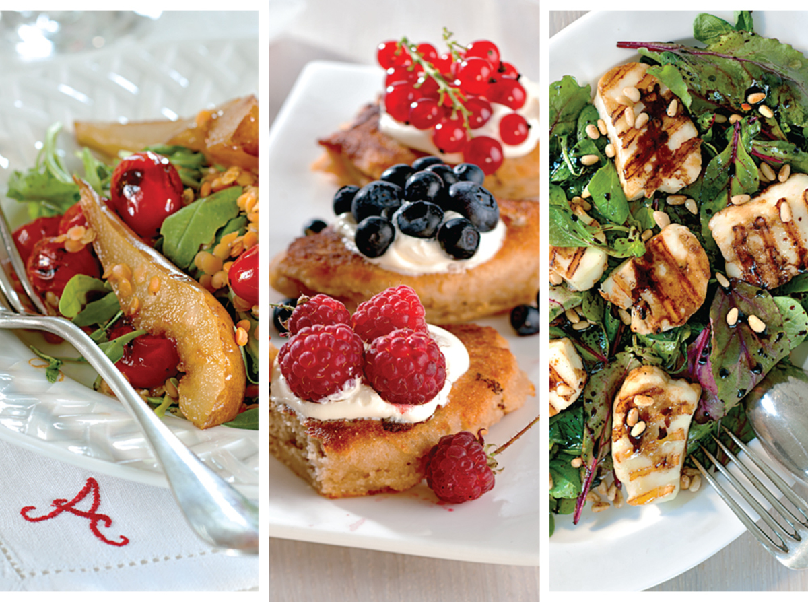
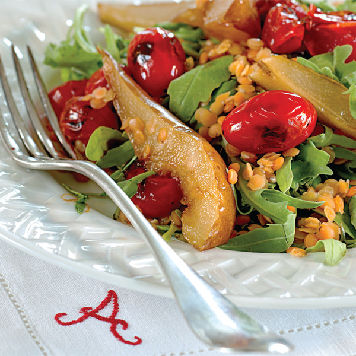
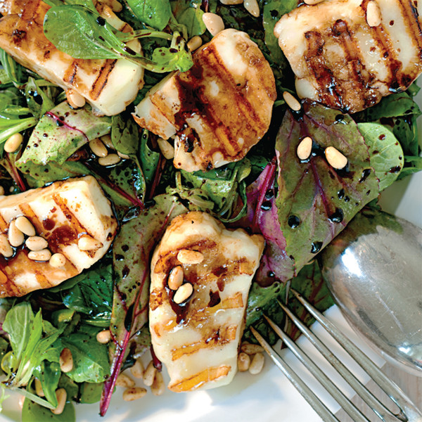
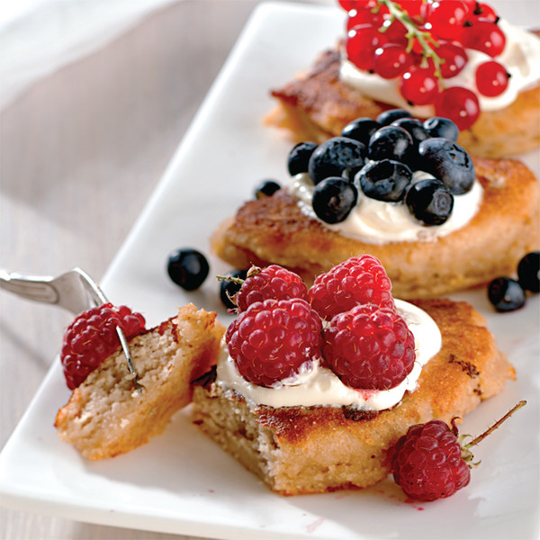

Как завтракали Жаклин Кеннеди, Софи Лорен и Маргарет Тэтчер
[ЕДА] [РЕЦЕПТЫ]Рассказываем, что самые известные леди мира ели на завтрак, и делимся рецептами.
Если от чашки черного кофе без сахара и молока вы пришли к тому, что в меру обильный аппетитный завтрак организму необходим, книга «Утро. 50 завтраков» ─ для вас.
«Я совсем не профессиональный повар, вроде обожаемых мною Джейми Оливера и Найджеллы Лоусон, никогда не оканчивала высоких гастрономических школ, ресторанными империями не владею и журнал делаю не кулинарный. Сама не люблю дилетантов. Но быть amateur на кухне, по-моему, можно и даже обязательно для всех, кто любит есть и любит жить. Человек я по натуре быстрый. И замороченные, долгие блюда — точно не про меня. Все завтраки, которые я готовлю, занимают не больше 20, а с техникой KitchenAid (американский бренд бытовой техники, входит в состав корпорации Whirlpool Corporation ─ прим. ред.) и 10 минут. Не верите? Вот вам моя книга в руки — проверяйте», ─ говорит Алена Долецкая, автор, представлять которого едва ли нужно.
Публицистка, экс-главный редактор журналов Interview Russia, Interview Germany и Vogue Russia Алена Долецкая готовить любит и делает это со вкусом. В своей книге «Утро. 50 завтраков» Долецкая, в том числе, «завтракает» в компании легендарных женщин мира. Попробуйте и вы ─ это совсем нетрудно.
Завтрак с Жаклин Кеннеди: теплый салат из чечевицы с грушей и печеными томатами
Ингредиенты (на 2 порции)
- Красная чечевица ─ 1 стакан
- Вода ─ 1/2 стакана
- Имбирь ─ 50 г
- Помидоры черри ─ 10–12 шт.
- Груша ─ 1 шт.
- Руккола ─ 1 средний пучок
- Масло виноградных косточек ─ 1 ст. л.
- Сливочное масло ─ 1 ч. л.
- Тростниковый сахар ─ 1/4 ч. л.
- Масло виноградных косточек ─ 2 ст. л.
- Лимонный сок ─ 1 ч. л.
- Кленовый сироп ─ 1/4 ч. л.
- Розовая гималайская соль по вкусу
«Всем трудоголикам чечевица показана утром, днем и вечером. Вот Жаклин Кеннеди, например. Могла бы так и сидеть первой леди до пенсии. Ан нет. Собралась с духом и стала блестящим книжным редактором и издателем» (А.Д.)
- Чечевицу варим в несоленой воде вместе с кусочком свежего имбиря. Часто подглядываем под крышку: красная чечевица варится быстро, может превратиться в пюре, а это катастрофа, нам она нужна al dente. Имбирь убираем, воду сливаем. Держим под закрытой крышкой.
- Рвем руками рукколу прямо в тарелки.
- Грушу нарезаем дольками, посыпаем сахаром и карамелизируем на горячей ско вороде в виноградном масле с кубиком сливочного.
- Отправляем ветку черри, чуть смазанную маслом, на пять минут в разогретую до 250 градусов духовку.
- Выкладываем все ингредиенты на просторное блюдо, солим, поливаем лимонно-кленовой заправкой.
Завтрак с Софи Лорен: жареный халуми с мангольдом, кедровыми орешками и медом
Ингредиенты (на 2 порции)
- Сыр халуми ─ 600 г
- Салат корн, мангольд, молодой шпинат ─ 150 г
- Кедровые орешки ─ 2 ст. л.
- Масло виноградных косточек ─ 4 ст. л.
- Бальзамик с инжиром ─ 1 ч. л.
- Акациевый мед ─ 1 ч. л.
- Лимонный сок ─ 1,5 ч. л.
«Софи Лорен пришла!» — говорит мне друг в миланском ресторане. Ни одна вилка не остановила своей работы, ни одна голова не повернулась в ее сторону. Богиня, с безупречно прямой спиной, шла к дальнему столику. Так, словно вот-вот скажет: «Марчелло, как ты меня достал» (А.Д.)
- Нарезаем сырные медальоны толщиной по 2 см и отправляем на сильно горячую сковороду. Халуми — уникальный сыр: его можно жарить без кляра и практически без масла, он никогда не прилипнет к сковороде. Не беда, если слегка подгорит. Горчить он от этого все равно не будет.
- Замешиваем микс из листьев салата корн, мангольда и молодого шпината, рассыпаем на две просторные тарелки вместе с подсушенными на сковороде кедровыми орешками.
- Для заправки: смешиваем виноградное масло, бальзамик, лимонный сок и мед. Хорошо взбалтываем все, например, в стеклянной банке с плотной крышкой.
- Выкладываем на получившийся «газон» жареный сыр и щедро поливаем кисло-сладкой заправкой.
Завтрак с Маргарет Тэтчер: оладьи на рисовом молоке со спелыми ягодами
Ингредиенты (на 4 порции)
- Гречневая мука ─ 1 стакан
- Рисовая мука ─ 1 стакан
- Рисовый сироп или сироп агавы ─ 1 ч. л.
- Рисовое молоко ─ 1 стакан
- Разрыхлитель ─ 1/4 ч. л.
- Греческий йогурт, домашняя сметана или сливки ─ 1/2 стакана
- Сезонные ягоды ─ 1 стакан
- Растительное масло без запаха ─ 2 ст. л.
- Сливочное масло ─ 1 ч. л.
- Соль с васильками и фиалками по вкусу
«Маргарет Тэтчер, на должности премьер-министра Великобритании, всегда восхищала меня двумя вещами: своей постоянной сменой произношения, от простонародного до королевского, и верностью бантам на блузках. И вот она, такая вся железная, бывало, остановит вдруг заседание в палате общин около 12 часов дня: «Прошу перерыв!» — и бежит покупать свежий бекон любимому мужу к завтраку. Великая была женщина (А.Д.)
- Замешиваем тесто из гречневой и рисовой муки, разрыхлителя, рисового молока и сиропа. Добавляем щепотку соли с фиалками.
- Поджариваем оладьи на сливочном масле, растопленном в растительном, с одной стороны, переворачиваем и сразу накрываем крышкой, чтобы не пересушить. После не забываем откинуть оладьи на бумажное полотенце.
- Подаем с йогуртом и свежими сезонными ягодами — красной или черной смородиной, малиной, крыжовником, черникой, клубникой.